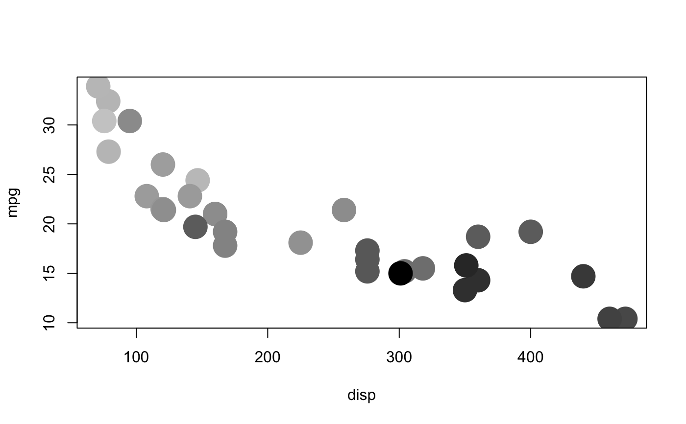

Continuous scale.
cscale(x, palette, na.value = NA_real_, trans = identity_trans())
| x | vector of continuous values to scale |
|---|---|
| palette | palette to use. Built in palettes:
|
| na.value | value to use for missing values |
| trans | transformation object describing the how to transform the raw data prior to scaling. Defaults to the identity transformation which leaves the data unchanged. Built in transformations:
|
with(mtcars, plot(disp, mpg, pch = 20, cex = 5, col = cscale(hp, seq_gradient_pal("grey80", "black"))))